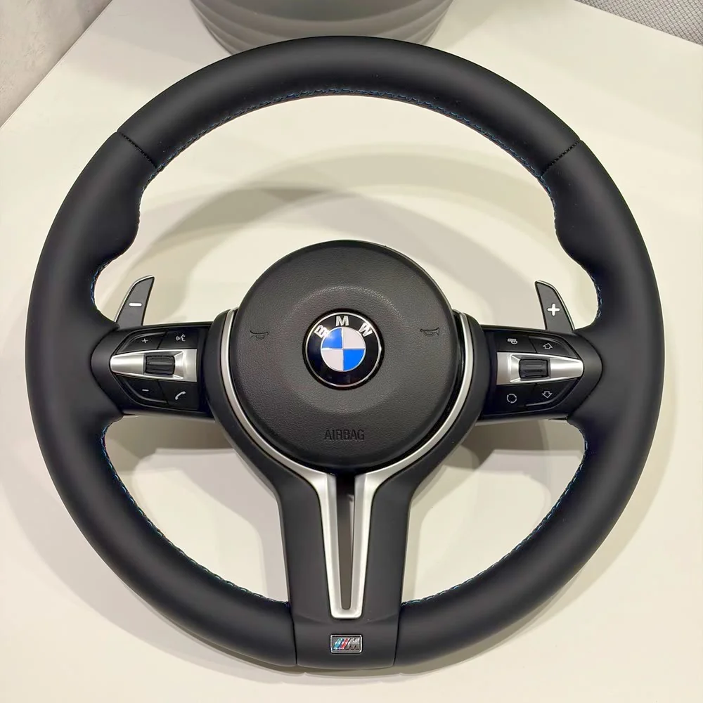
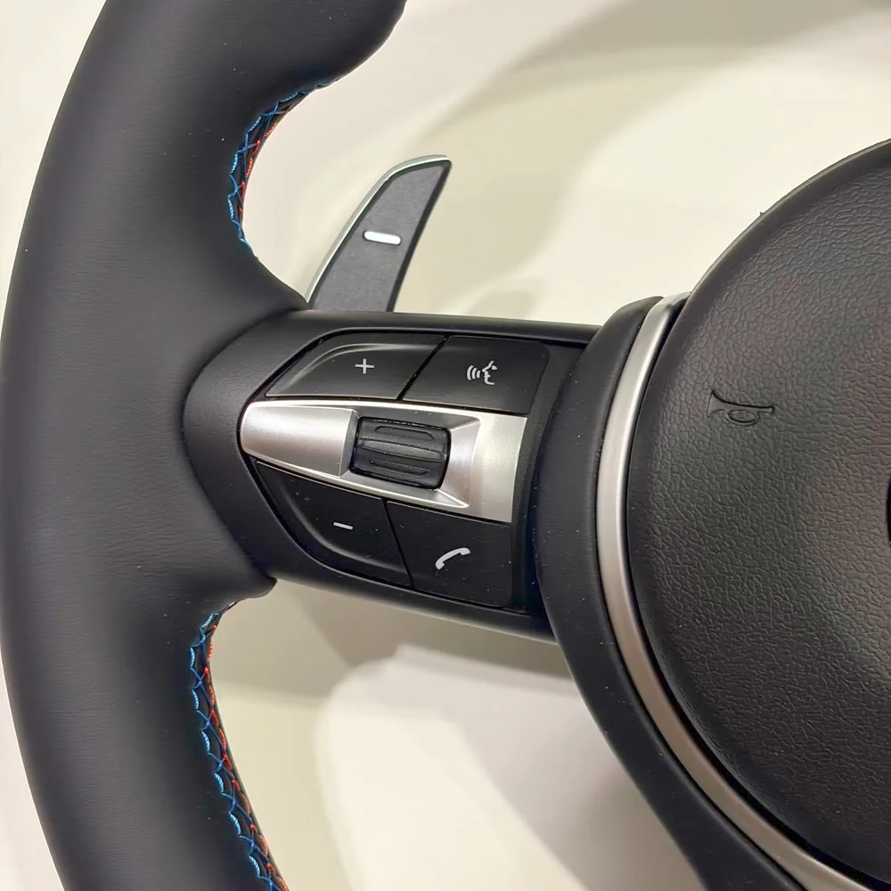
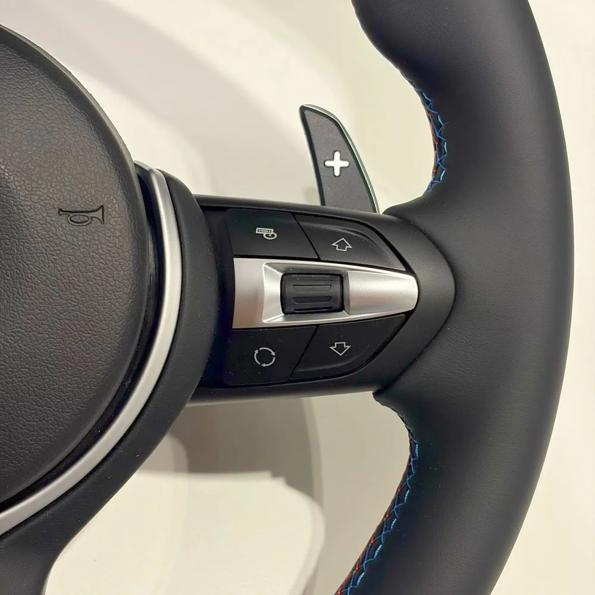
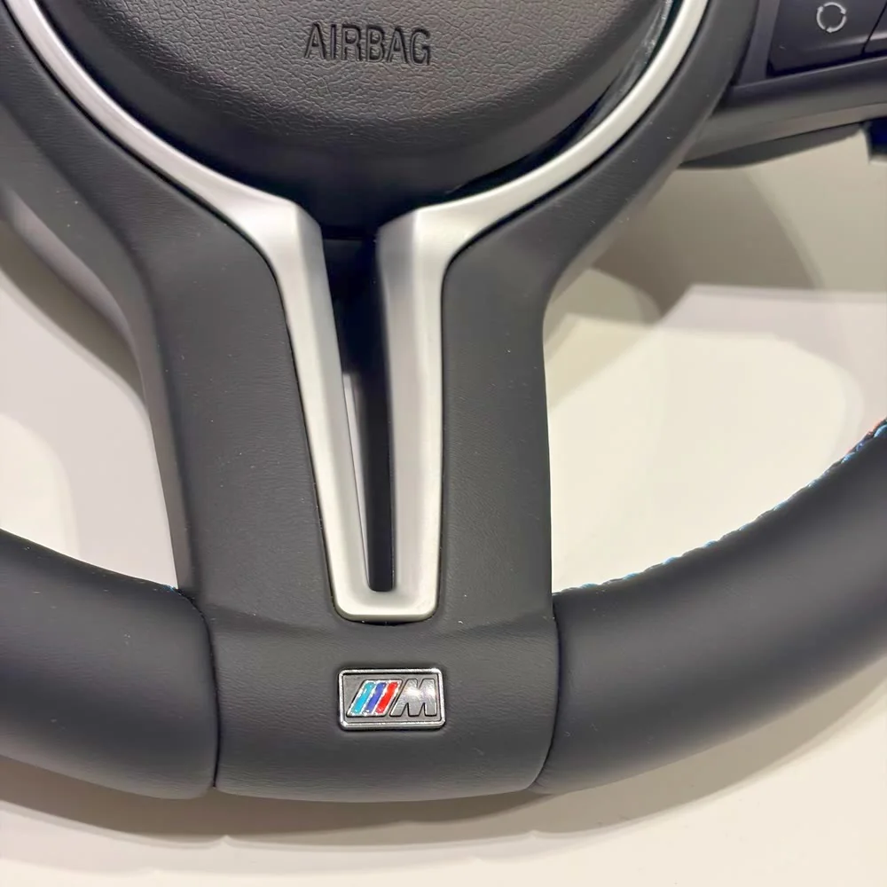
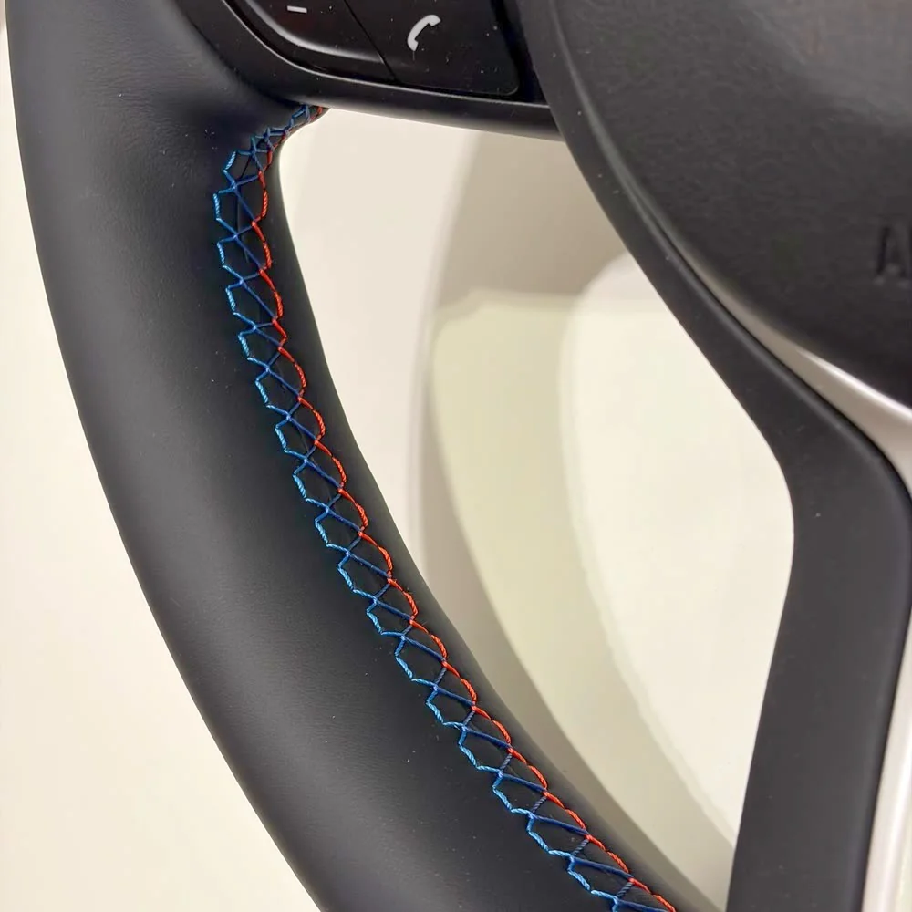
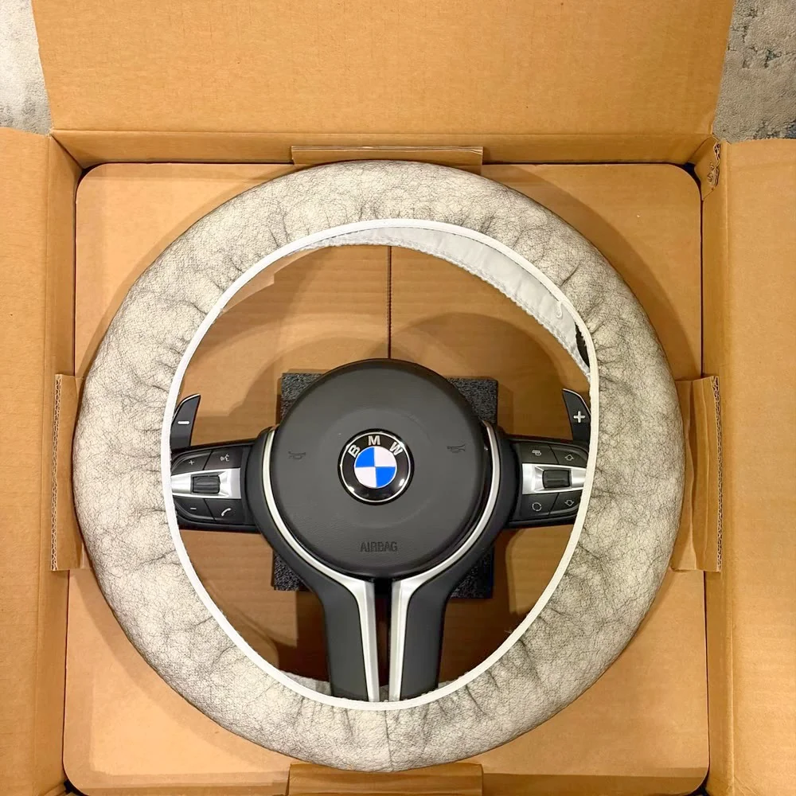

Руль № E02 — BMW E-серии






Под заказ
от 11 900 ₽
| E60 (только рестайлинг): По каталогу | 16 900 ₽ |
|---|---|
| Другие кузова E: По каталогу | 11 900 ₽ |
В Telegram откроется сообщение: «Хочу руль № E02 (BMW E-серии)».
Руль № E02 из каталога BMW E-серии.
Под заказ — изготовление около трёх недель.
Совместимость с вашим автомобилем подтверждаем перед заказом по кузову, году и фото штатного руля.
Предоплата 3 000 ₽ (5 000 ₽ для рулей от 50 000 ₽), гарантия на руль 6 месяцев.
Подобрать на свой кузов
Доставка и оплата
- Доставка по России и в другие страны (отправляем во все страны, где есть СДЭК).
- Самовывоз в Одинцово, 24/7 — договоритесь с менеджером о времени.
- Предоплата 3 000 ₽ (5 000 ₽ для рулей от 50 000 ₽), остальное при получении.
- Срок: под заказ около трёх недель.
- Гарантия на руль — 6 месяцев.